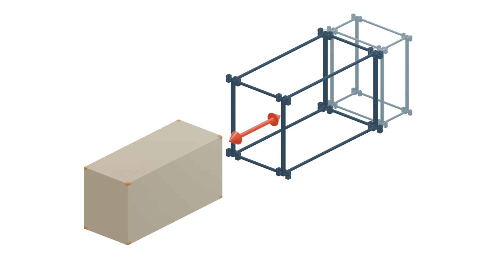

Accommodation modules
Removable volumetric units that provide rooms or other usable spaces. Each module is independently supported within the accommodation frame.
An exoskeleton-based building system for modular accommodation
ExoSett is a building system in which accommodation modules can be installed into, removed from and replaced within a reusable structural frame, allowing buildings to change over time without requiring the whole building to be demolished and rebuilt. The content of this website explores ways in which that central idea might be put to use.
Visualize your own ExoSett building
Open ExoSett Sketch →By separating the frame from the accommodation it hosts, ExoSett allows each to change on its own timescale. Modules can be installed, removed or replaced as needs change, without relying on neighbouring modules for structural support.

The ExoSett system
The frame carries the building loads. Modules are supported individually rather than stacked upon one another, allowing a cassette to be installed, removed or replaced without relying on neighbouring modules for structural support.
Overview
In many modular buildings, the modules form part of the primary structure and are stacked directly upon one another. Removing one module may therefore affect the modules around or above it.
ExoSett takes a different approach. The structural frame exists independently of the accommodation modules it hosts. Each module is supported by the frame within a defined cell and is not required to carry the modules above it.
This separation allows the structural framework to remain in use while the accommodation it supports changes.
Principal elements
Removable volumetric units that provide rooms or other usable spaces. Each module is independently supported within the accommodation frame.
The primary load-bearing structure. It contains the cells into which accommodation modules are installed and transfers building loads to the foundations.
A separate structure providing access, circulation and routes for utilities serving the modules installed in the accommodation frame.
Design principles
The accommodation frame remains structurally viable whether its cells are occupied or empty.
No accommodation module is structurally indispensable to the modules around it.
Modules are supported by the frame rather than by the modules below them.
A cassette can be installed, removed or replaced independently, subject to the practical requirements of access, services and safe handling.
Loads are transferred through defined structural components and interfaces.
Access and utilities are provided without making the accommodation modules part of the primary circulation or service structure.
Change over time
Accommodation needs change. Rooms become outdated, damaged or unsuitable. Demand rises and falls. Buildings acquire new uses, and expectations for comfort, technology and energy performance evolve.
Conventional buildings often respond to these changes through invasive refurbishment, prolonged closure or demolition. ExoSett is intended to make the accommodation itself easier to replace, relocate or reconfigure while retaining useful structural infrastructure.
The extent and speed of any change will depend on the design of the particular building, the modules, the service connections, the installation equipment and the applicable regulatory requirements.
Development
ExoSett defines a system architecture rather than a single fixed building design. Frame dimensions, module sizes, structural materials, connection behaviour, bracing, foundations, facades, roofs and installation methods may vary between implementations.
These choices must be resolved through architectural and engineering design for each application. The ExoSett concept is currently being developed alongside independent structural engineering investigation.
The component definitions, Design pages and illustrative stories on this website document the principles that define the system, the building-wide considerations they create and some of the possibilities they may support. The About section explains the project’s current scope and development status.